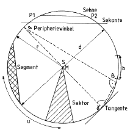
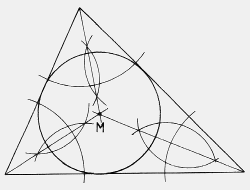
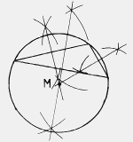

Geometrie
Der Kreis
Übersicht

- Peripherie: der Kreis an sich
- Sekante: Gerade, die die Peripherie an zwei Punkten schneidet
- Sehne: Gerade, die die Peripherie an zwei Punkten berührt, der Teil der Sekante, der innerhalb des Kreise liegt
- Segment: Fläche zwischen einer Sehne und dem umlaufenden Kreisbogen
- Sektor: Fläche, die zwischen zwei Radien und dem eingeschlossenen Kreisbogen liegt
- Tangente: Gerade, die die Peripherie des Kreises an der Außenseite berührt
- M: Mittelpunkt des Kreises
- r: Gerade vom Mittelpunkt M zur Peripherie des Kreises
- d: Gerade von Peripherie zu Peripherie durch den Mittelpunkt M, d=2r
- b: Kreisbogen zwischen zwei Punkten der Periherie
- u: Umfang des Kreises, identisch mit der Peripherie
Inhalt
zurück zum Anfang
Der Kreis im Dreieck wird mittels der Winkelhalbierenden konstruiert. Der Punkt M, welcher der Kreuzungspunkt der drei Senkrechten ist, ist Mittelpunkt des Kreises im Dreieck.
zurück zum Anfang
Sieht ein wenig unförmig aus, aber was soll's! Im Gegensatz zum Kreis im Dreieck, in dem die Winkelhabierenden das Problem lösen, spielen im Kreis um das Dreieck die Seitenhalbierenden die Hauptrolle. Ihr Kreuzungspunkt M ist gleichzeitig Mittelpunkt des Kreises um das Dreieck.
zurück zum Anfang